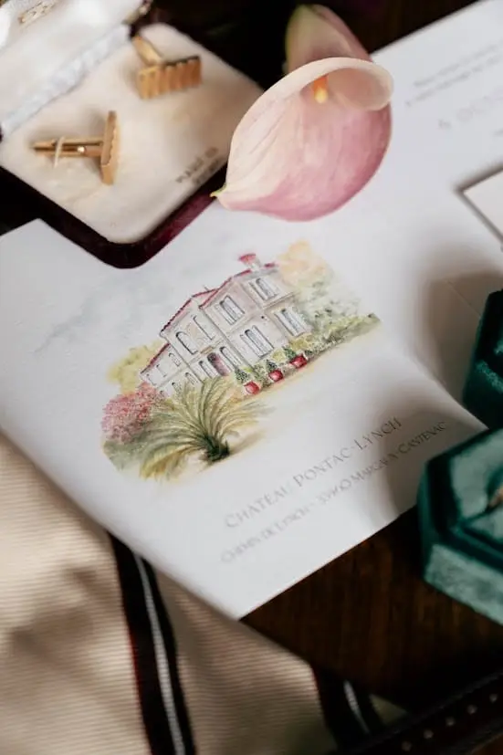
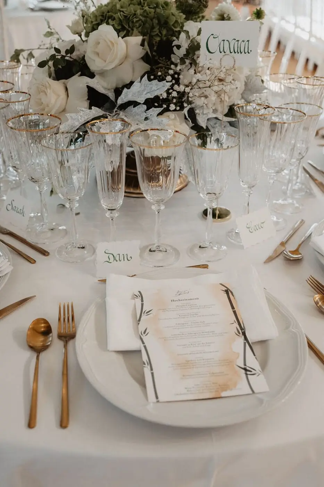
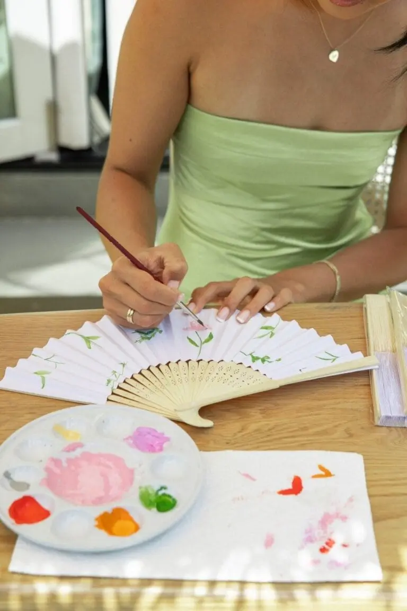

Organising a wedding can quickly become expensive, but there are many ways to create original, elegant decor without blowing the budget. DIY (Do It Yourself) is ideal for personalising your wedding, adding your own touch and creating unique memories. As a wedding planner & designer, I help my couples in Nouvelle-Aquitaine create accessible, beautiful DIY projects that reflect their personality and their love story. Whether you are a beginner or an experienced maker, these ideas will help you make your wedding unique, authentic and memorable, while keeping a harmonious, considered style.
DIY stationery: elegance at a small price
Stationery often accounts for a large part of the wedding budget, but with a little creativity it can become a strong element of your visual world. Rather than buying ready-made designs, you can create your menus and place cards using recycled paper, kraft paper or coloured paper that matches your theme. Adding a ribbon, a wax seal or a personalised stamp gives an elegant, professional finish without spending a fortune. You can even play with calligraphy or hand drawings to make each piece unique.
Thank-you cards are another perfect DIY example: they can be personalised with your initials, an illustration inspired by your theme or even photos of the two of you. As well as delighting your guests, they become real keepsakes to treasure. For signage, you can use reclaimed wood, thick card or painted slates, and point the way to the ceremony, the photo booth or the reception room in style. Each sign can be decorated with cut-out letters, a stencil or a drawing, giving your wedding visual coherence and a pleasant experience for your guests from the moment they arrive.
DIY centrepieces: simple and striking
Centrepieces are often seen as an expensive item, but with a little imagination they can become chic and memorable without breaking the bank. Recycled vases and jars, such as old bottles or jam jars, can be turned into elegant bud vases. Paint them, wrap them in rope, fabric or ribbon, or add a small personalised message for a unique effect.
Candles and candle holders bring a warm, romantic atmosphere, especially combined with dried flowers or eucalyptus. These simple elements transform the feel of a table and create an intimate atmosphere for your guests. You can also play with plant arrangements using local, seasonal flowers, branches, herbs or foliage. The advantage is that these creations are natural, economical and beautiful all at once, and can be adapted to every wedding style, from the most rustic to the most elegant.
Each table can tell a little story, reflect your tastes and personality, and create a wow effect for your guests without increasing the overall budget. Well-thought-out details often have more impact than expensive, complicated decorations.

Signs and hanging decorations: personalising your venue
Signs and hanging decorations are perfect for bringing a personal touch to your reception venue and telling your story. A DIY welcome board, for example, made on a hand-painted frame or a decorated slate with your names and wedding date, immediately sets the tone and gives your guests a warm welcome. You can add decorative elements such as dried-flower garlands, ribbons or LED lights to enhance the charm and authenticity of your entrance.
Garlands and hanging pieces made of paper, fabric bunting or dried flowers can be hung from the ceiling, along the walls or outdoors to create a magical, poetic effect. These decorations add volume, colour and movement to your space while remaining very affordable.
You can also create a photo wall to display your memories as a couple. Hanging your photos with pegs on a string, or creating a board of your highlights since you met, personalises your space and offers guests an immersive, emotional experience. These simple but thoughtful details strengthen your wedding's identity and tell your story in a creative, elegant way.

Tips for successful DIY
For your DIY projects to be a source of pleasure rather than stress, it is essential to plan each step in advance. Think about the pieces you want to make, list the materials you need and allow time to test your ideas. Testing your creations before the big day lets you check their stability, how they hold up and the overall visual effect. It also gives you the chance to fix small details, improve the finish and make sure each element blends perfectly with the rest of your decor.
Involving your loved ones in these projects can turn these moments into precious memories, strengthen your bond and make the experience more enjoyable while speeding up the work. These shared moments often become memorable anecdotes you will remember long after the wedding. It is also wise to choose simplicity: a single well-executed element will often have more impact than overloaded or overly complicated decor. Playing with textures and materials (wood, glass, paper, flowers) adds depth and enriches your decor while keeping visual coherence.
DIY isn't just about making objects: it becomes a creative, convivial activity that adds meaning to your wedding and lets you express your personality. Each piece becomes a unique signature of your couple, while respecting your budget. By taking the time to prepare, test and refine your creations, you turn your wedding decor into a true reflection of your love and your style, while fully enjoying the creative process.
DIY accessories and guest gifts
Beyond decor, DIY can also cover the small details that make all the difference, such as accessories and gifts for your guests. For example, you can create little bags of personalised sugared almonds or sweets, wrapped in kraft paper with labels showing your names and wedding date. Handmade bracelets, fans or bookmarks are also lovely, inexpensive touches that leave your loved ones a unique keepsake. These small attentions are part of the overall experience of your wedding and show you have thought of every detail with love.
DIY photo areas and photo booths
A DIY photo booth is both fun and decorative. With a few vintage frames, dried-flower garlands, ribbons, fabrics or playful props, you can create an original, photogenic corner for your guests. This kind of DIY project doesn't need much material and can be made in advance, while adding interactive value to your day. The photos your guests take will also become wonderful memories, showcasing your personal creations in a fun, attractive way.
Tips to keep DIY realistic and stress-free
Even if you want to make everything yourself, it is essential to stay realistic and organised so that DIY remains a pleasure and not a source of stress. Take the time to plan your projects according to the time you have, your skills and your priorities. It is often wise to start with simple creations with strong visual impact, such as centrepieces, signage or small decorative elements that quickly dress a venue and add an immediate personal touch. More complex or time-consuming ideas can be left for when you have more time or the support of your loved ones.
Involving your family and friends can turn DIY into a convivial, memorable activity, creating moments of closeness and sharing. However, it is important to share out the tasks evenly to avoid overload or frustration. Everyone can focus on what they do best, whether painting, assembling or choosing decorative details, and so help create harmonious decor.
The secret of successful DIY lies in preparation, simplicity and the pleasure of creating together. Don't try to do everything perfectly, but to create a unique atmosphere that reflects your personality and your story as a couple. With these principles in mind, every moment spent making things becomes a joyful part of the preparations, and every creation a meaningful piece of your wedding.


Frequently asked questions about wedding DIY & professional advice
Taking on DIY for your wedding often raises many questions. That's normal: between wanting to do it well, fearing you will run out of time and worrying about a result that looks too "homemade", it is important to be well supported and make the right choices from the start.
Do you need to be handy to succeed with DIY decor?
Not at all. Wedding DIY doesn't mean complexity. The most successful projects are often the simplest. Jars, candles, minimalist stationery or handwritten signs require few technical skills. The key is to choose ideas suited to your skill level, the time you have and your theme. A few well-made pieces are better than a multitude of unfinished creations.
How much time should you allow for DIY?
Time is one of the key factors in DIY. Ideally, start your creations several months before the wedding, spreading them over several weekends. Test each project beforehand to avoid unpleasant surprises. As a wedding planner, I always recommend finishing DIY projects at least two weeks before the big day, so you stay calm and free to fully enjoy the final preparations.
How do you avoid a "too much" or messy effect?
Visual coherence is essential. Define a colour palette and two or three main materials (wood, glass, paper, flowers…) and repeat them throughout your decor. This creates natural harmony, even with different elements. DIY should serve your atmosphere, not overload it. Every object should have a purpose or real decorative value.
Which DIY projects have the most visual impact on a small budget?
Elements that structure the space are often the most effective:
– a welcome sign,
– simple but luminous centrepieces,
– candles and fairy lights,
– beautiful signage or a personalised photo corner.
These decorations immediately catch the eye, create an atmosphere and make an impression on guests, without requiring a large budget.
DIY or buy: how do you find the right balance?
Not everything has to be homemade. DIY is an excellent way to personalise, but some items can be hired or bought to save time and gain peace of mind. The ideal is to mix: DIY for the strong, emotional pieces, and ready-made solutions for the rest. My role is precisely to help couples find this balance for an elegant, seamless result.
One last tip for successful wedding DIY
Enjoy yourselves. DIY should remain a joyful, creative experience that brings people together. Involve your loved ones, turn these moments into memories, and remember that your guests won't be looking for perfection, but for authenticity. Decor designed from the heart will always have more impact than standardised decor.
Links to DIY tutorials and tips
In short…
DIY is an ideal way to reduce costs while creating a unique, authentic wedding. Every creation reflects your couple, your tastes and your values, turning your reception venue into a warm, emotional and unforgettable space. With a few simple materials, patience and creativity, you can create chic, original and memorable decor, even on a limited budget. DIY projects become tangible memories carrying your personal imprint, and help make your big day authentic, personal and deeply memorable for you and your guests.